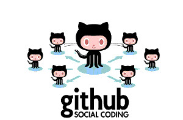

Colaborando no github
Uma interessante experiência no mundo do Software Livre.

Colaborei em alguns poucos projetos no GitHub, mas na correção de um bug do CherryPy, senti que foi diferente.
Balanço geral
Já traduzi texto do LearnXinYminutes, fiz um ajuste de código no projeto tlog, contribui com o projeto Sharer.js do grande Ellison Leão, e, também algo legal, uma contribuição remunerada via CodeMill, no projeto FX-BT-Scripts. Tenho meus próprios projetos lá.
Tudo em um conjunto de linguagens bacanas: Python, Rust, C, Ruby, Perl e JavaScript. E inglês, para as traduções :smiley:.
No LearnXinYminutes e no tlog, devo admitir que a motivação foram as camisetas do HackToberFest.
Mas essas experiências, apesar de eu estar esperando uma recompensa, me fizeram passear bastante pelos repositórios do GitHub procurando o que fazer.
Fiquei um pouco mais íntimo do git, em primeiro lugar.
Tive que resolver conflito de merge, fazer pull-request, adicionar commits para finalizar um issue.
Só que o mais importante foram as monitorias para resolver os problemas. Tive contato com pessoas experientes e pacientes, que me conduziram nesse processo, revisaram meu código, orientaram-me sobre a melhor forma de resolver os problemas que apareciam. Aprendi a ser paciente e esperar os testes do Travis-CI.
A diferença
A diferença que senti na última contribuição foi principalmente pelo que me levou a realizá-la.
Li, em um grupo do Facebook de Ruby, uma vaga de emprego em que o primeiro contato com a empresa seria o envio de um pull-request para o repositório indicado, com o teste.
Sem email, entrevista, nada. Um teste honesto, que avalia muitos conhecimentos já de cara. Eu gostei e resolvi tentar. A pior pegadinha é que o candidato era livre pra escolher a linguagem e qualquer biblioteca ou ferramenta, desde que fosse opensource. O sistema operacional também era de livre escolha.
Por causa disso, perdi uns três dias pensando se fazia em Rust, Ruby, Perl ou Python. Vi inúmeros frameworks. Mas decidi por Python, que é a linguagem em que tenho maior domínio.
Ainda assim tava difícil: Django, Flask, Bottle, Falcon...
Descartei todos e escolhi o CherryPy, velho companheiro de alguns projetos.
Codei, codei, codei, testei. É, desculpem-me, não fiz TDD mas testei bastante e com relevância. Eis que surge um problema.
Eu programei para Python3, e apareceu um warning no cherrypy em meus testes, indicando que o módulo cgi estava obsoleto. Nesse mesmo warning, havia a sugestão de usar o módulo html.
Era um warning, nada demais, mas caramba, em um teste de emprego? :smiley:
Então fui verificar, fiz uma gambiarra e o warning sumiu. Então nas dependências de meu projeto-teste, ao invés de declarar o CherryPy, declarei um repositório meu, clonado do oficial, mas com minhas alterações.
Nas pesquisas sobre esse aviso, vi que havia um issue aberto sobre isso. Foi aí que a vergonha bateu, e dei uma melhoradinha em minha gambiarra, e submeti um pull-request.
Claro que ele foi rejeitado, e primeiramente, pelos processos automáticos de verificação de código. Depois de vencê-los, o travis deu pau em várias versões do Python. Depois disso, o revisor do código e para essa tarefa meu mentor apresentou várias mudanças que deveriam ser feitas.
Depois de algumas mudanças, o código ficou muito melhor, passou em todos os testes e foi aplicado ao repositório principal. E um bug a menos no CherryPy.
Lições
Foi legal trabalhar com um ucraniano.
Um problema que você encontra em alguma ferramenta opensource, certamente é um problema de mais pessoas.
Aprendi que com paciência, pode-se ganhar pessoas interessadas em contribuir e compartilhar. Essa receptividade me ganhou.
Ler as mensagens do sistema, e não ignorá-las, pois elas podem indicar problemas que podem e devem ser resolvidos.
É muito melhor participar de processos seletivos que comecem dessa forma!
Consideração final
Já recebi feedback sobre o teste para a vaga de emprego e foi muito positivo, especialmente pela forma como apontou no que eu poderia ter sido melhor, e também já conversei com o líder técnico.
Agora o CEO é o limite.